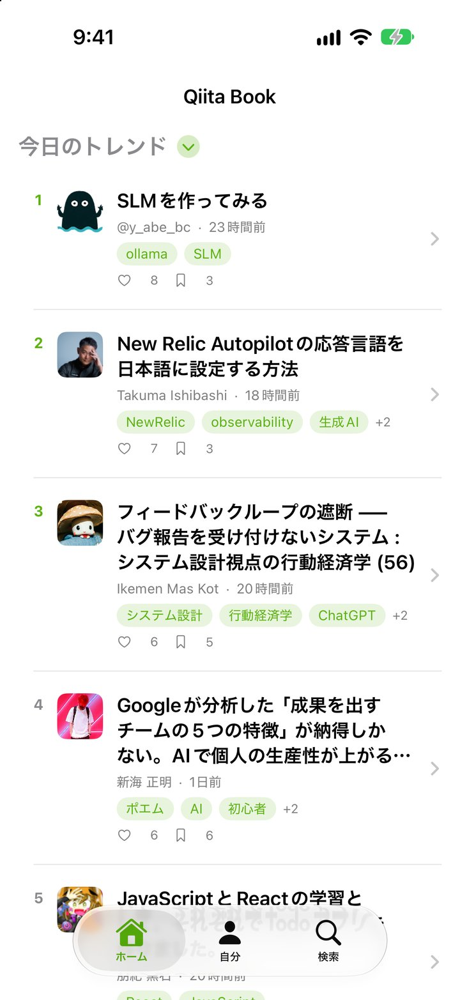
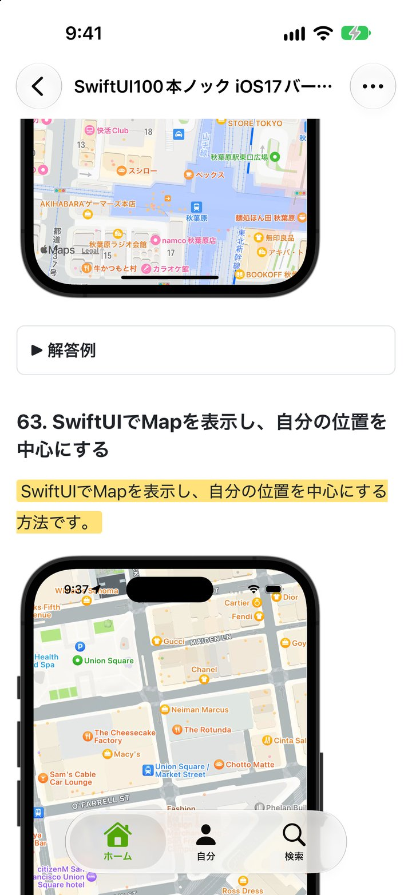
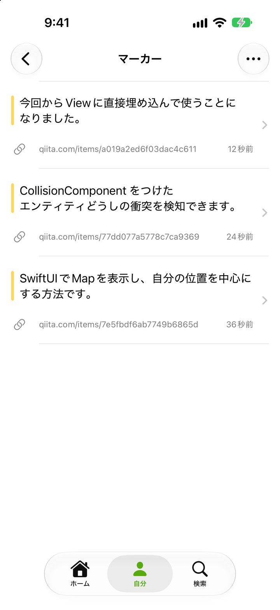
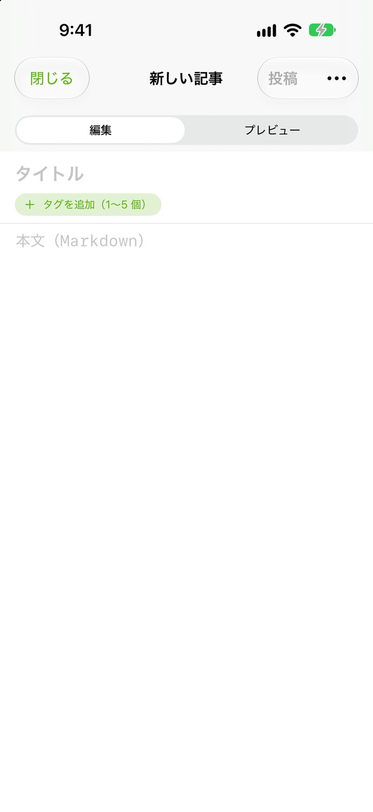
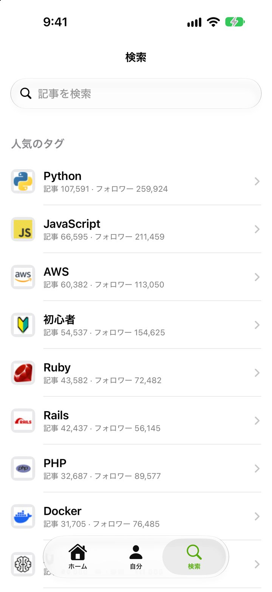
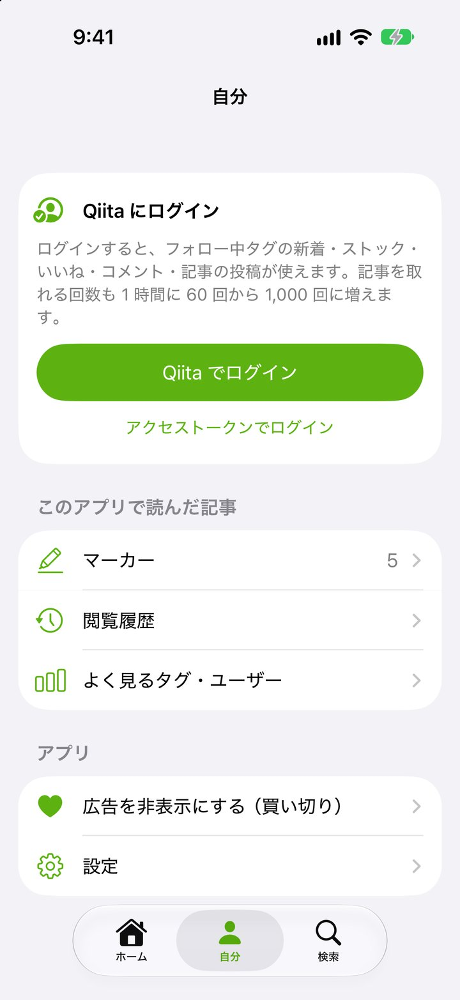
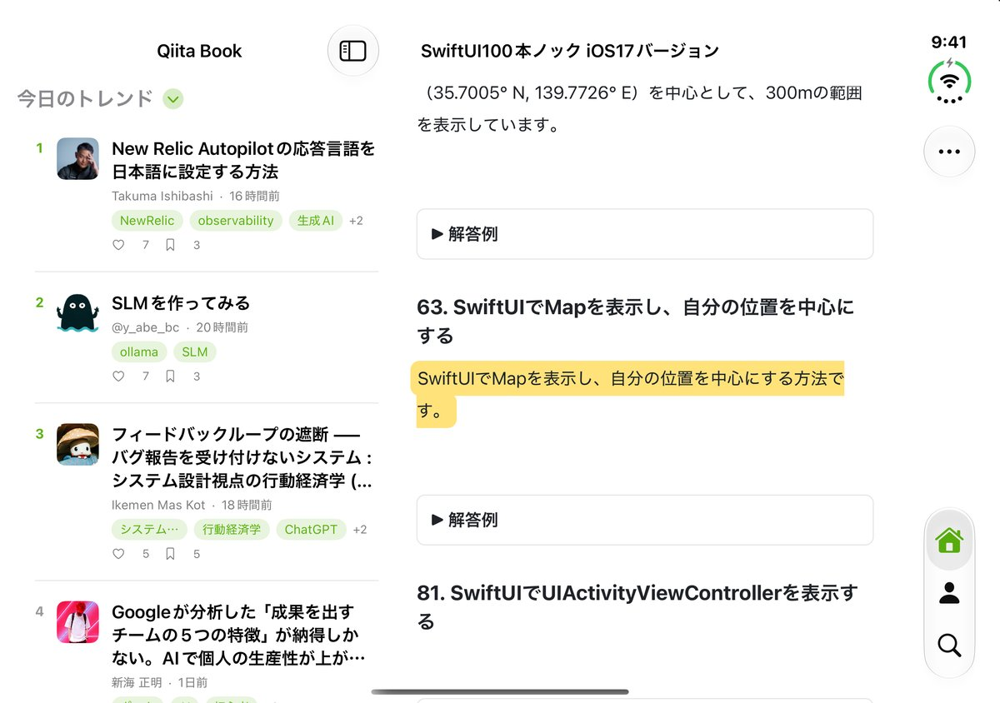

Qiita を、
本のように読む。
今日のトレンドも、追いかけているタグの新着も、アプリの中でそのまま読めます。気になった一文にはマーカーを引いて、あとから見返す。思いついたら Markdown で書く。ホーム画面の Widget が、今日の話題を運んできます。
App Store で見るQiita のアカウントがなくても読めます。Qiita でログインすると、ストック・いいね・コメント・投稿も。
できること
読む
今日・今週・今月のトレンド、新着、フォロー中タグの新着。見出しを押して切り替え、記事はアプリの中で開きます。コメントもそのまま読めます。
ログインで広がる
Qiita でログインすると、ストック・いいね・コメントができます。自分の記事とストックした記事も「自分」タブに並びます。
マーカー
本文の気になる言葉を選んで「マーカー」。黄色く残り、「自分」タブの一覧から記事のその場所へ飛べます。
書く
Markdown で記事を書いて、プレビューを見ながら投稿。途中のものは下書きとして端末に残ります。投稿した記事の編集もできます。
Widget で追う
「今日の Qiita」と「お気に入りタグ」の Widget をホーム画面に。タップすると、アプリの中でその記事が開きます。
iPhone Duo
閉じると 1 列、開くと「一覧｜記事」と「編集｜プレビュー」の 2 列。列の切れ目は折り目に合わせています。
画面






iPhone Duo を開くと

広告について
記事一覧の間に広告が入ります。「広告を非表示にする（買い切り）」を一度購入すると、記事の間の広告と動画広告が表示されなくなります。価格はアプリの中と App Store でご確認ください。以前の月額サポータープランに加入中の方は、加入している間はそのまま広告なしでお使いいただけます。
Qiita との関係
Qiita Book は個人開発のアプリで、Qiita 株式会社が作ったものでも、Qiita 株式会社が認めたものでもありません。記事の取得・ストック・投稿には、Qiita が公開している API（Qiita API v2）を使っています。Qiita でのログインは Qiita のページで行い、アプリがパスワードを受け取ることはありません。